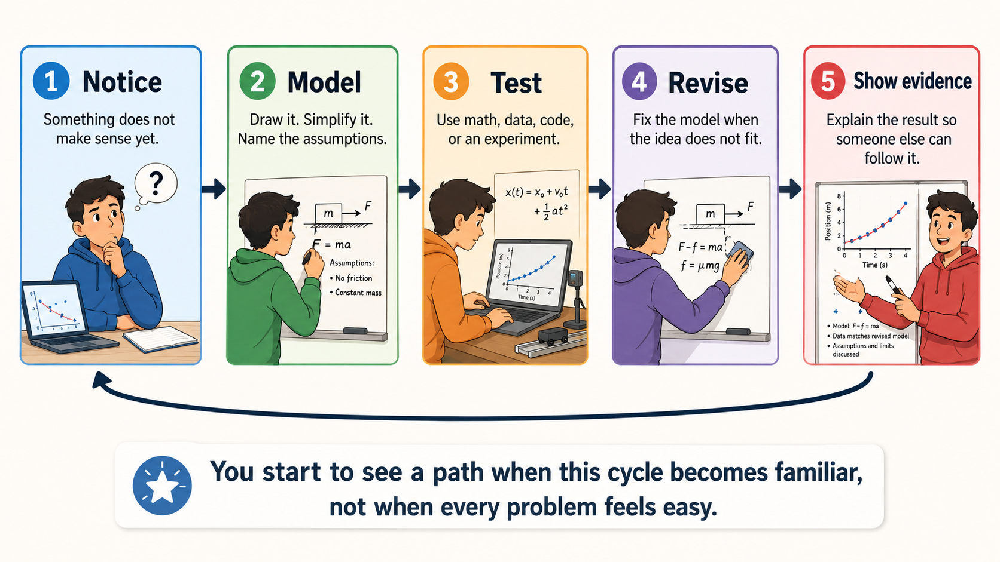
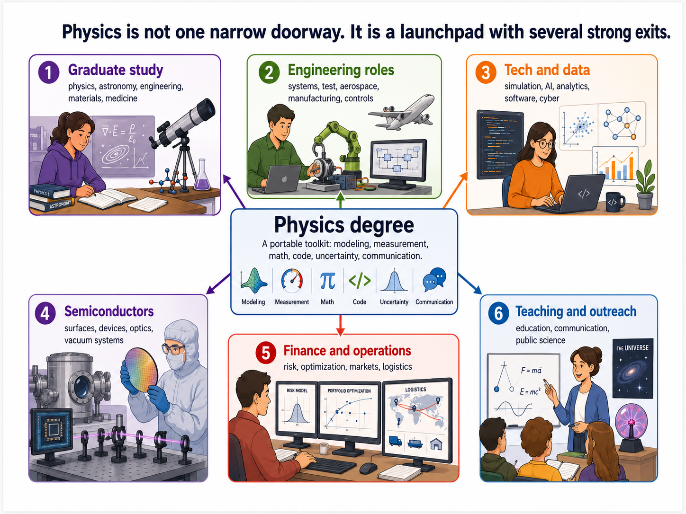
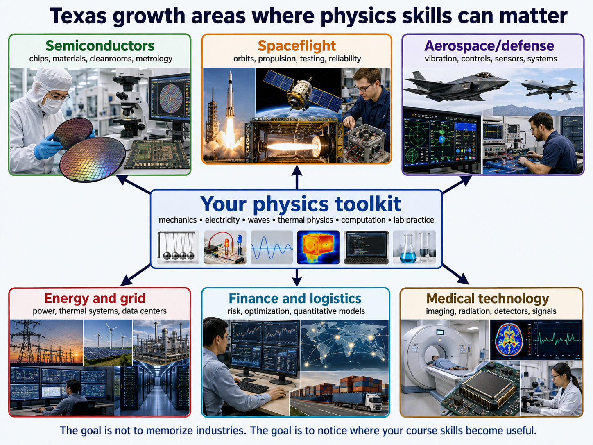
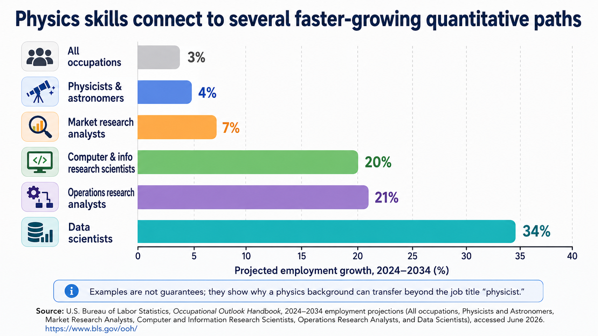
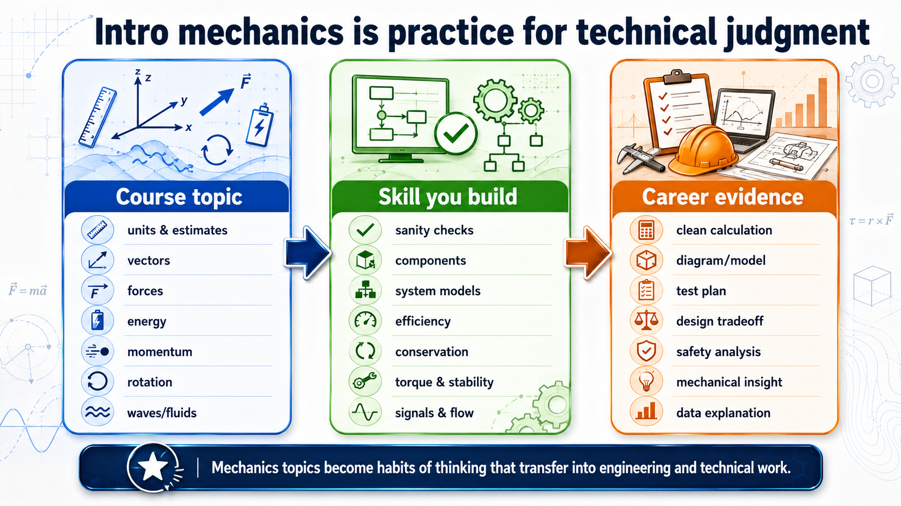

Finding Your Path in Physics#
Chapter roadmap
This preamble is here to help you decide whether physics is a path you can picture yourself taking. You do not need to arrive already knowing the field, already loving every math problem, or already knowing your final career.
As you read, focus on three questions:
What habits, skills, and support systems would help me complete a physics degree?
How can the ideas in this course connect to careers, research, and high-growth industries in Texas?
What evidence can I build this semester that would make a physics path feel more realistic?
The goal is simple: leave this preamble with a clearer next step, not a final life plan.
How to use this page
Choose the route that matches where you are right now.
If you are just curious, skim the figures and checkpoints first. Look for one place where you think, “I could imagine doing something like that.”
If you are considering switching into physics, pay close attention to the sections on skills, evidence, and Texas growth areas. The question is not whether physics sounds impressive; the question is what next step would make the path more real.
If you already like physics and want a plan, use the final path check to choose one project, conversation, or skill to work on in the next two weeks.
You do not need to make a permanent decision today. You need a better next experiment.
Could I see myself doing physics?#
You may have an image in your head of a “physics person.” Maybe that person is a genius, never gets confused, solves problems alone, and already knows every equation. That picture is false. It also pushes capable students away before they have a fair chance to try the subject.
Real physics is much more practical than that. You notice a pattern, draw a simpler version of the situation, test the model with math or data, find the weak part of your first attempt, and try again. You learn how to make uncertainty smaller. You learn how to explain your reasoning so someone else can check it.

Fig. 1 A physics path becomes believable through repeated practice. You do not need every problem to feel easy; you need a process that lets you keep improving after the first attempt fails.#
Checkpoint
When a physics problem is hard, do you usually need more talent, or do you usually need a clearer model and more feedback?
This course gives you a safe place to test whether that process fits you. If you like building a model of a real situation, checking whether the answer makes physical sense, and explaining the result clearly, then physics may be worth a serious look.
What do I need to complete a physics degree?#
A physics degree is demanding, but it is not mysterious. You need a growing set of tools, and you build those tools one semester at a time.
At East Texas A&M University, the physics program includes several pathways. The undergraduate catalog lists physics, applied physics, astronomy and astrophysics, and computational physics and astrophysics as part of the department’s instructional work. It also describes the degree programs as preparation for graduate study in fields such as physics, astronomy, engineering, or medicine, as well as for private-sector careers that use analytical and problem-solving skills.
Here is what that means in student language:
What you build |
What it looks like in school |
What it becomes later |
|---|---|---|
Mathematical fluency |
You practice algebra, trigonometry, calculus, vectors, and units until they become tools instead of obstacles. |
You can read technical work, build models, and check whether numbers make sense. |
Physical intuition |
You learn to ask what forces, energy transfers, constraints, and approximations matter most. |
You can simplify a messy real situation without ignoring the important physics. |
Computational skill |
You use Python, spreadsheets, or other tools to calculate, simulate, plot, and test ideas. |
You can work with data, automate repeated calculations, and communicate results visually. |
Laboratory discipline |
You measure carefully, estimate uncertainty, document methods, and compare results with models. |
You can work in technical environments where evidence matters more than opinion. |
Communication |
You write explanations, draw diagrams, present results, and defend assumptions. |
You can translate technical work for engineers, managers, scientists, clients, or students. |
Persistence with feedback |
You revise solutions, learn from mistakes, and ask better questions after getting stuck. |
You can survive difficult technical work without pretending it should be easy. |
If you are currently an engineering student, this list may look familiar. The difference is emphasis. Engineering often begins with design goals and constraints. Physics often begins with the underlying model: what is happening, what assumptions are valid, and what principles control the system. Both paths are valuable. Physics may fit you if you keep wanting the deeper explanation behind the engineering formula.
Practical next step
Do not ask only, “Am I good enough for physics?” Ask a better question: “What would I need to practice for the next eight weeks to make physics a more realistic option?” That question gives you something to do.
Why a physics degree might be the right choice#
Physics might be the right choice if you want a degree that stays broad while still being technical. A physics major studies motion, forces, energy, electricity, magnetism, waves, thermal systems, quantum behavior, materials, astronomy, computation, and measurement. That range matters because many careers change faster than course catalogs do.
A narrow degree can be the right choice when you already know the specific job you want. Physics is different. Physics is a strong choice when you want to keep several technical doors open while building a serious analytical foundation.

Fig. 2 A physics degree can lead toward graduate school, engineering-adjacent work, semiconductors, data and computing, finance and operations, teaching, and science communication. The common thread is not a single job title; it is the ability to model, measure, compute, and explain.#
A physics degree may be a good fit if several of these statements sound like you:
You notice yourself thinking… |
Why that points toward physics |
|---|---|
“I want to know why the formula works.” |
Physics rewards you for digging into the model behind the equation. |
“I like engineering, but I also like the fundamentals.” |
Physics can keep you close to engineering while giving you a deeper foundation in the underlying principles. |
“I want options in research, tech, space, energy, data, or medicine.” |
Physics gives you a broad technical base that can be aimed in several directions. |
“I like problems where the answer is not obvious at first.” |
Physics trains you to break hard problems into simpler parts. |
“I want to build evidence that I can do technical work.” |
Physics courses, labs, code projects, and research experiences can become a portfolio. |
Use this video as a broad career-path reminder, not as a checklist. Listen for the variety of directions that can follow from physics training, especially paths outside a traditional professor-or-researcher route.
Why simple employment summaries can mislead you#
Be careful with public summaries that rank majors by the percentage of graduates working immediately in the same named field. Those summaries are usually too shallow to be useful for physics.
Physics is not a simple major-to-job-title pipeline. A traditional physics path often leads to an advanced degree. Many physics bachelor’s graduates do not immediately work as “physicists” because they enter graduate programs in physics, astronomy, engineering, materials science, medical physics, data science, or other fields. If a summary counts only immediate employment in a physics-titled job, it can make the degree look weaker than it is.
The opposite problem also happens. Physics graduates may work in engineering, software, data, finance, operations, education, national labs, medicine-related fields, or defense. A public summary may count those as “not physics” even when the graduate is using physics-trained skills every day.
Read outcome statistics carefully
When you see a claim about physics employment, ask what it counted. Did it include graduate school? Did it include engineering and computing jobs? Did it count only jobs with “physicist” in the title? Did it separate bachelor’s, master’s, and Ph.D. outcomes? A simple number may hide the main story.
Here is the more honest picture:
Misleading question |
Better question |
|---|---|
“What percent of physics majors become physicists right away?” |
What percent enter graduate school, technical employment, teaching, engineering, computing, data, finance, or other quantitative paths? |
“Is a physics bachelor’s a job-training degree?” |
What additional evidence should you build with the degree: research, coding, electronics, internships, lab skills, teaching, or engineering experience? |
“Does the degree pay off immediately?” |
Which path are you using it for: graduate school, a technical job, an engineering off-ramp, a data path, finance, teaching, or professional school? |
“Is physics worse than engineering because the job title is less direct?” |
Do you want a direct professional pipeline, or do you want a broad technical foundation with several exits? |
This does not mean every physics path is automatically good. You still need advising, projects, internships or research, and a plan. The point is that the common internet summary is often asking the wrong question.
Careers where physics gives you a leg up#
Physics helps most when the work involves modeling, measurement, computation, uncertainty, and clear technical explanations. The degree becomes even stronger when you can translate your coursework into employer language.
Career direction |
Why physics helps |
How to strengthen the path |
|---|---|---|
Semiconductor manufacturing and materials |
You learn electricity, quantum ideas, optics, thermal behavior, surfaces, and measurement. |
Add electronics, materials science, statistics, Python, cleanroom exposure if available, and internships. |
Aerospace and spaceflight |
You learn mechanics, forces, energy, momentum, rotation, fluids, orbits, and numerical modeling. |
Add CAD or design exposure, controls, simulation, teamwork projects, and aerospace internships. |
Data science and AI-adjacent work |
You learn to model noisy systems, test assumptions, analyze data, and explain uncertainty. |
Add Python, statistics, machine learning, databases, and a public portfolio of projects. |
Finance, risk, and operations |
You learn quantitative reasoning, optimization habits, approximation, and mathematical modeling. |
Add statistics, economics, finance basics, coding, and projects using real data. |
Medical physics and imaging |
You learn radiation, waves, detectors, fields, signals, and quantitative measurement. |
Plan early for graduate training and look for hospital, imaging, or detector-related experience. |
Engineering-adjacent technical roles |
You learn first-principles reasoning that can support test engineering, systems work, controls, and R&D. |
Add engineering electives, team projects, instrumentation, and internships. |
Teaching and science communication |
You learn to explain hard ideas clearly and connect models to the real world. |
Add tutoring, teaching experience, outreach, and strong written explanations. |
Physics becomes more useful when you pair the degree with one extra direction. You do not need to master everything at once. You need one clear next layer of evidence.
Direction |
Add this to physics |
First student evidence |
|---|---|---|
Spaceflight or aerospace |
Python simulation, controls, or CAD exposure. |
Model a landing, orbit, vibration, or rotating system and explain the assumptions. |
Semiconductors |
Electronics, materials, statistics, or instrumentation. |
Analyze sensor or process data and explain what makes the result repeatable. |
Data, AI, or software |
Python, statistics, databases, or machine learning basics. |
Clean a dataset, make a plot, and write a short explanation of the uncertainty. |
Finance or operations |
Optimization, probability, economics, or risk modeling. |
Build a small model of risk, routing, scheduling, or resource allocation. |
Medical technology |
Signals, imaging, detectors, or radiation physics. |
Analyze an image, waveform, detector signal, or measurement uncertainty. |
Teaching or outreach |
Tutoring, presentation practice, or visual explanation. |
Create a clear explanation, demo, or figure that helps another student understand a hard idea. |
The American Institute of Physics maintains lists of employers that have hired physics bachelor’s graduates into science and engineering positions. That matters because it shows the degree is not limited to one job title. It also means you should build evidence for the direction you want.
Use this video as a private-sector reality check. Listen for how physics training shows up as problem solving, modeling, instrumentation, data analysis, communication, and the ability to learn unfamiliar technical systems.
Checkpoint
Which sounds more useful for your future: listing course titles, or being able to show a project, plot, lab result, or technical explanation that came from those courses?
Physics and high-growth opportunities in Texas#
Texas gives you local examples of why physics-adjacent training matters. Semiconductors, spaceflight, aerospace, energy, data centers, finance, medical technology, and defense all need people who can reason quantitatively and learn technical systems quickly.

Fig. 3 Texas growth areas are not separate from physics. Mechanics, electricity and magnetism, waves, thermal physics, computation, and laboratory practice all become useful when an industry needs measurement, modeling, reliability, and technical judgment.#
One way to see the point is to look at systems where failure is expensive. A rocket booster catch is not a “plug into an equation” problem. It depends on dynamics, propulsion, control systems, sensors, structures, software, test data, and careful decisions under uncertainty.
Watch this as a mechanics-and-controls example, not just as a spectacular launch video. The Super Heavy booster catch shows why spaceflight needs people who can model motion, predict forces and torques, test hardware, read sensor data, and revise designs until the system works in the real world.
What to notice
As you watch, identify one mechanics idea, one sensing or control idea, and one reason the first model would not be enough. A system like this works only after many rounds of prediction, testing, failure analysis, and revision.
The semiconductor connection is especially clear. The Texas CHIPS Office describes the Texas CHIPS Act as establishing the Texas Semiconductor Innovation Consortium and the Texas Semiconductor Innovation Fund to support semiconductor research, design, manufacturing, workforce training, and related investments. The Texas Space Commission describes its role as supporting civil, commercial, military, and academic advances in human space exploration and technology. Those state-level efforts do not guarantee any individual job, but they show why physics-adjacent skills have local relevance.
Use this fab tour to notice how much physics is hidden inside “manufacturing.” High-quality semiconductor production depends on materials, electricity, optics, thermal control, vacuum systems, metrology, automation, statistics, and people who can make a process repeatable at scale.
What to notice
As you watch, look for measurement, cleanliness, automation, thermal control, and repeatability. Semiconductor manufacturing is not just making small parts; it is controlling physical processes precisely enough that the result works millions or billions of times.

Fig. 4 These BLS projections are examples, not promises. They show why a physics background can be useful beyond the job title “physicist,” especially when you add coding, statistics, lab experience, internships, or research. The source is printed directly on the figure so the numbers can be checked against the U.S. Bureau of Labor Statistics Occupational Outlook Handbook.#
The point is not that one job title does everything. SpaceX, Texas Instruments, NASA, national labs, hospitals, and technology companies depend on teams. Physics matters because the habits you build in this course sit underneath many of those teams’ hardest technical decisions.
The lesson is not that physics automatically gets you a job in any of these areas. The lesson is that physics can give you the technical base to enter several growing areas if you deliberately add the right evidence.
Texas growth area |
Physics connection |
Evidence to build as a student |
|---|---|---|
Semiconductors |
Electricity, materials, quantum ideas, optics, vacuum systems, thermal behavior, and measurement. |
Electronics labs, Python data analysis, statistics, materials projects, and manufacturing internships. |
Spaceflight and aerospace |
Mechanics, rotation, fluids, energy, momentum, orbits, vibrations, and simulation. |
Mechanics projects, numerical simulations, CAD exposure, controls, and team design work. |
Energy, grid, and data centers |
Power, heat transfer, reliability, sensors, and large-scale system modeling. |
Thermal analysis, circuits, data logging, instrumentation, and energy-related projects. |
Finance and logistics |
Quantitative modeling, uncertainty, optimization, and data interpretation. |
Statistics, coding, economics or finance electives, and real-data portfolio work. |
Medical technology |
Imaging, radiation, waves, detectors, signals, and reconstruction. |
Research experience, detector projects, hospital shadowing if appropriate, and graduate-school planning. |
What topics in this course connect to job outcomes?#
Introductory mechanics can feel abstract because the problems are simplified. That simplification is not a weakness. It is how technical people learn to isolate the dominant effect before adding complexity.

Fig. 5 Course topics become career evidence only when you practice explaining what the work shows. A clean force diagram, a Python plot, a lab uncertainty estimate, or a short technical memo can turn a homework skill into something you can discuss in an interview.#
Course topic |
Skill you are building |
Where it shows up later |
|---|---|---|
Units and measurement |
Estimation, dimensional analysis, scale, and sanity checks. |
Engineering reviews, lab work, manufacturing tolerances, sensor calibration, and technical communication. |
Vectors |
Separating magnitude, direction, components, and coordinate choices. |
Robotics, aerospace, navigation, computer graphics, electromagnetism, and any field with geometry. |
Motion and kinematics |
Describing change with position, velocity, acceleration, graphs, and models. |
Vehicle motion, robotics, biomechanics, tracking, animation, and experimental data analysis. |
Forces and Newton’s laws |
Connecting interactions to acceleration through a system model. |
Mechanical design, test engineering, vibration, structural analysis, and control systems. |
Work and energy |
Tracking transfers and conservation when force details are complicated. |
Energy systems, power, efficiency, thermal design, and safety calculations. |
Momentum and collisions |
Reasoning about interactions over short times. |
Impact safety, sports technology, particle detectors, manufacturing processes, and space debris risk. |
Rotation and torque |
Understanding stability, angular motion, and rotational dynamics. |
Motors, turbines, wheels, robotics joints, aerospace attitude control, and machinery. |
Fluids and oscillations |
Modeling flow, pressure, waves, resonance, and stability. |
Aerospace, weather, medical devices, acoustics, seismology, sensors, and materials testing. |
A good semester goal is to create one piece of evidence from this course that you would not be embarrassed to show someone later. It could be a polished graph, a clear lab explanation, a short Python simulation, or a corrected solution that explains the model better than your first attempt did.
What topics relate to research being done at ETAMU?#
Physics becomes more real when you can connect course ideas to people and projects near you. East Texas A&M’s department page describes faculty and student research in areas such as surface physics and thin-film characterization, stellar astronomy and astrophysics, and nuclear astronomy and astrophysics. The page also describes surface physics work involving tools such as X-Ray Photoelectron Spectroscopy and Auger Electron Appearance Potential Spectroscopy, astronomy work involving asteroids, white dwarfs, and binary stars, and nuclear theory/nuclear astrophysics work involving reactions, nuclear structure, neutron stars, supernovae, and computational applications.
ETAMU research area |
Course connection |
What you could ask about |
|---|---|---|
Surface physics and thin films |
Forces, energy, electricity, quantum behavior, materials, measurement, and uncertainty. |
How do surfaces change material behavior? How do instruments identify what is on a surface? |
Organic semiconductors and materials |
Electricity, optics, thermal behavior, charge transport, and data analysis. |
How do material structure and charge motion affect devices? |
Astronomy and astrophysics |
Gravity, motion, orbits, energy, light, waves, and computational modeling. |
How do we use observations and simulations to study asteroids, white dwarfs, binary stars, exoplanets, or planetary systems? |
Nuclear theory and nuclear astrophysics |
Energy, forces, conservation laws, computation, and extreme physical conditions. |
How do nuclear reactions and dense matter affect stars, supernovae, and neutron stars? |
Physics education research |
Models, reasoning, misconceptions, communication, and evidence about learning. |
How do students learn physics, and how can instruction help them build better reasoning habits? |
You do not need to understand a research paper before talking to a professor. A better starting point is: “I am interested in this topic, and I am trying to figure out what skills I should build next.” That is a serious question.
Use this astronomy-career panel to see astronomy as more than one job title. A serious path can involve research, observing, software, instrumentation, simulation, data analysis, education, outreach, or technical support work around telescopes and missions.
Checkpoint
Which research area above connects most naturally to something you already liked in math, science, coding, engineering, astronomy, or technology?
What should I make of YouTube career advice?#
You will hear career advice from YouTube, TikTok, podcasts, Reddit, and friends. Some creators with physics, engineering, or technical backgrounds say their degree did not matter, did not pay off, or did not lead directly to the job they expected. Sometimes that criticism is fair. A degree can be expensive. Advising can be weak. A program can fail to connect coursework to careers. A student can graduate without enough projects, internships, coding, research, or professional direction.
But there is also a trap: people often underestimate the skills that made them successful.
A creator who explains science clearly is using technical communication. A creator who builds devices is using modeling, measurement, design, testing, and failure analysis. A creator who makes strong visual explanations is using abstraction, sequencing, and audience awareness. A creator who critiques bad science is using evidence, uncertainty, and logical consistency. Those are not random skills. They are exactly the kinds of skills physics can build.
A better way to listen to creator stories
Do not ask only, “Did this person use the exact title of their degree?” Ask, “What skills did this person gain, and how did those skills transfer?” That question helps you separate a weak career plan from a valuable education.
You should still take negative stories seriously. If someone says, “I wish I had learned more coding,” treat that as advice. If someone says, “I wish I had done internships,” treat that as advice. If someone says, “I wish someone had helped me translate physics into employer language,” treat that as advice. Do not treat it as proof that physics has no value.
The hard truth is that physics rewards students who build evidence outside ordinary homework. The degree can open doors, but it works best when you add proof: a research project, an internship, a simulation, a lab skill, an electronics project, a teaching experience, or a portfolio figure.
Before you use the path check#
Talk to someone before you decide
A serious next step is not “decide your whole future.” A serious next step is asking one informed person one specific question. Ask a professor, advisor, tutor, older student, research student, or working professional something concrete, such as “What skill should I build next if I am interested in spaceflight, semiconductors, data, teaching, or research?”
A one-page path check#
Use this page as a personal check-in. You do not need to know your final career. You only need a next experiment.
Prompt |
Your response |
|---|---|
One physics topic I can imagine using later is… |
|
One career or research area that sounds interesting is… |
|
One skill I need to strengthen is… |
|
One person or group I could ask for advice is… |
|
One piece of evidence I can build this semester is… |
|
One action I will take in the next two weeks is… |
Good answers are specific. “Get better at physics” is too vague. “Go to office hours with my Chapter 5 force diagram questions” is useful. “Learn Python” is too vague. “Make one clean plot of projectile motion and explain what the axes mean” is useful.
You do not become more certain about physics by waiting for certainty. You become more certain by trying real tasks, getting feedback, and noticing whether the work still pulls your attention after it gets difficult.
Sources and data notes#
This preamble uses public sources for program structure, career outcomes, and Texas industry context. Treat all career statistics as snapshots, not guarantees. Also treat broad employment summaries with caution unless they explain how they counted graduate school, job sector, degree level, and job title.
East Texas A&M University undergraduate catalog: Physics and Astronomy.
East Texas A&M University Department of Physics and Astronomy: department overview and research areas.
American Institute of Physics: Career Paths for Physicists.
American Institute of Physics: Initial Employment Sectors of New Physics Bachelors, Academic Years 2022-23 and 2023-24.
American Institute of Physics: Who’s Hiring Physics Bachelors.
U.S. Bureau of Labor Statistics: Physicists and Astronomers.
U.S. Bureau of Labor Statistics: Data Scientists.
U.S. Bureau of Labor Statistics: Operations Research Analysts.
U.S. Bureau of Labor Statistics: Computer and Information Research Scientists.
U.S. Bureau of Labor Statistics: Market Research Analysts.
Office of the Texas Governor: Texas CHIPS Office and Texas Semiconductor Innovation Fund.
State of Texas: Texas Space Commission.
American Physical Society: Physics careers and education and APS Success in Industry Careers Series.
SpaceX: Starship’s Fifth Flight Test and official flight-test video.
Texas Instruments: 300mm wafer fab virtual tour and YouTube version.
American Astronomical Society: About a Career in Astronomy and How to Start Career Planning in the Astronomical Sciences.